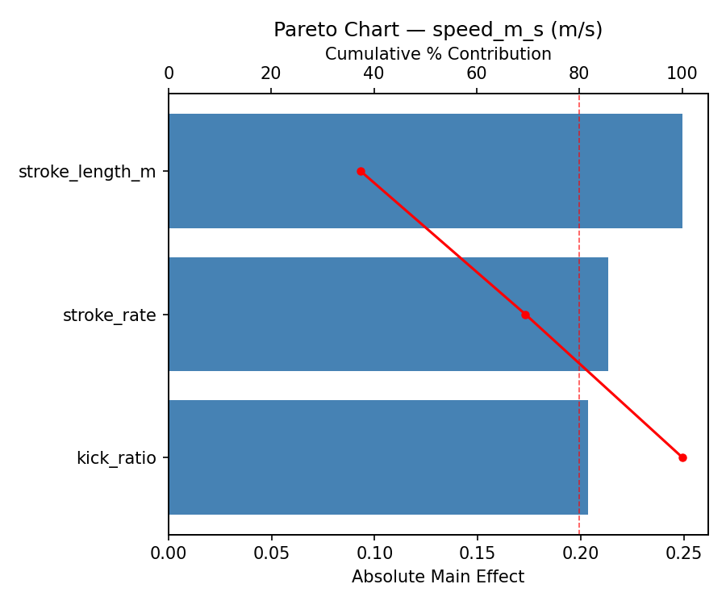
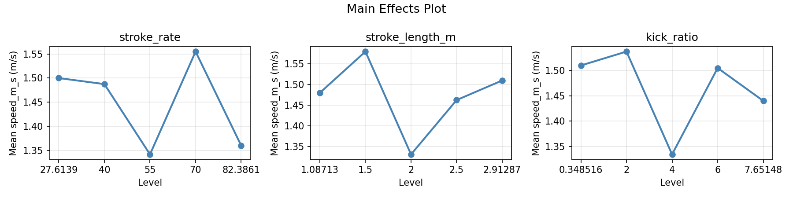
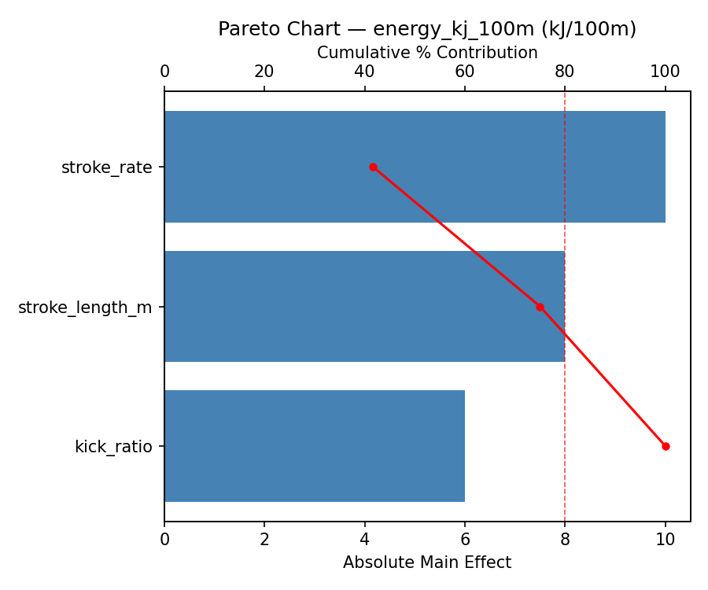
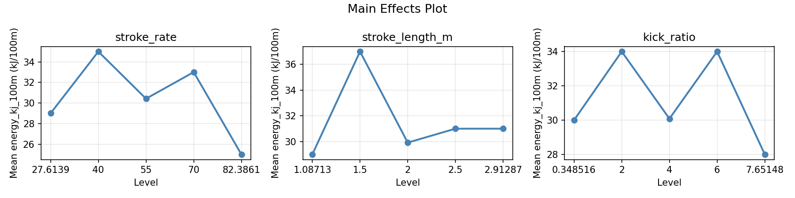

Summary
This experiment investigates swimming stroke efficiency. Central composite design to maximize speed and minimize energy expenditure by tuning stroke rate, stroke length, and kick tempo.
The design varies 3 factors: stroke rate (strokes/min), ranging from 40 to 70, stroke length m (m), ranging from 1.5 to 2.5, and kick ratio (kicks/stroke), ranging from 2 to 6. The goal is to optimize 2 responses: speed m s (m/s) (maximize) and energy kj 100m (kJ/100m) (minimize). Fixed conditions held constant across all runs include stroke = freestyle, pool = 25m.
A Central Composite Design (CCD) was selected to fit a full quadratic response surface model, including curvature and interaction effects. With 3 factors this produces 22 runs including center points and axial (star) points that extend beyond the factorial range.
Quadratic response surface models were fitted to capture potential curvature and factor interactions. The RSM contour plots below visualize how pairs of factors jointly affect each response.
Key Findings
For speed m s, the most influential factors were stroke length m (37.4%), stroke rate (32.0%), kick ratio (30.5%). The best observed value was 1.82 (at stroke rate = 70, stroke length m = 1.5, kick ratio = 6).
For energy kj 100m, the most influential factors were stroke rate (41.7%), stroke length m (33.3%), kick ratio (25.0%). The best observed value was 24.0 (at stroke rate = 40, stroke length m = 2.5, kick ratio = 2).
Recommended Next Steps
- Run confirmation experiments at the predicted optimal settings to validate the model.
- Consider whether any fixed factors should be varied in a future study.
Experimental Setup
Factors
| Factor | Low | High | Unit |
|---|
stroke_rate | 40 | 70 | strokes/min |
stroke_length_m | 1.5 | 2.5 | m |
kick_ratio | 2 | 6 | kicks/stroke |
Fixed: stroke = freestyle, pool = 25m
Responses
| Response | Direction | Unit |
|---|
speed_m_s | ↑ maximize | m/s |
energy_kj_100m | ↓ minimize | kJ/100m |
Configuration
{
"metadata": {
"name": "Swimming Stroke Efficiency",
"description": "Central composite design to maximize speed and minimize energy expenditure by tuning stroke rate, stroke length, and kick tempo"
},
"factors": [
{
"name": "stroke_rate",
"levels": [
"40",
"70"
],
"type": "continuous",
"unit": "strokes/min"
},
{
"name": "stroke_length_m",
"levels": [
"1.5",
"2.5"
],
"type": "continuous",
"unit": "m"
},
{
"name": "kick_ratio",
"levels": [
"2",
"6"
],
"type": "continuous",
"unit": "kicks/stroke"
}
],
"fixed_factors": {
"stroke": "freestyle",
"pool": "25m"
},
"responses": [
{
"name": "speed_m_s",
"optimize": "maximize",
"unit": "m/s"
},
{
"name": "energy_kj_100m",
"optimize": "minimize",
"unit": "kJ/100m"
}
],
"settings": {
"operation": "central_composite",
"test_script": "use_cases/210_swimming_stroke/sim.sh"
}
}
Experimental Matrix
The Central Composite Design produces 22 runs. Each row is one experiment with specific factor settings.
| Run | stroke_rate | stroke_length_m | kick_ratio |
|---|
| 1 | 55 | 2 | 4 |
| 2 | 70 | 1.5 | 6 |
| 3 | 40 | 2.5 | 2 |
| 4 | 55 | 2.91287 | 4 |
| 5 | 55 | 2 | 4 |
| 6 | 27.6139 | 2 | 4 |
| 7 | 55 | 2 | 0.348516 |
| 8 | 55 | 2 | 4 |
| 9 | 70 | 2.5 | 2 |
| 10 | 82.3861 | 2 | 4 |
| 11 | 55 | 2 | 4 |
| 12 | 55 | 1.08713 | 4 |
| 13 | 55 | 2 | 4 |
| 14 | 40 | 1.5 | 6 |
| 15 | 55 | 2 | 4 |
| 16 | 70 | 1.5 | 2 |
| 17 | 55 | 2 | 7.65148 |
| 18 | 70 | 2.5 | 6 |
| 19 | 55 | 2 | 4 |
| 20 | 40 | 1.5 | 2 |
| 21 | 40 | 2.5 | 6 |
| 22 | 55 | 2 | 4 |
Step-by-Step Workflow
1
Preview the design
$ python doe.py info --config use_cases/210_swimming_stroke/config.json
2
Generate the runner script
$ python doe.py generate --config use_cases/210_swimming_stroke/config.json \
--output use_cases/210_swimming_stroke/results/run.sh --seed 42
3
Execute the experiments
$ bash use_cases/210_swimming_stroke/results/run.sh
4
Analyze results
$ python doe.py analyze --config use_cases/210_swimming_stroke/config.json
5
Get optimization recommendations
$ python doe.py optimize --config use_cases/210_swimming_stroke/config.json
ℹ
Multi-Objective Optimization
This experiment has conflicting objectives (speed_m_s (↑), energy_kj_100m (↓)). Use --multi to find the best compromise using desirability functions:
$ python doe.py optimize --config use_cases/210_swimming_stroke/config.json --multi
6
Generate the HTML report
$ python doe.py report --config use_cases/210_swimming_stroke/config.json \
--output use_cases/210_swimming_stroke/results/report.html
Real-World Experiment Workflow
ℹ
Physical Sports Experiment? Use the Manual Workflow
Athletic experiments involve real human performance, equipment, and environmental conditions. Results require actual physical testing. The simulation script above is for demonstration. For your real experiments, use record, status, and export-worksheet.
$ python doe.py export-worksheet --config use_cases/210_swimming_stroke/config.json \
--format csv --output worksheet.csv
$ python doe.py status --config use_cases/210_swimming_stroke/config.json
$ python doe.py record --config use_cases/210_swimming_stroke/config.json --run 1
$ python doe.py analyze --config use_cases/210_swimming_stroke/config.json --partial
$ python doe.py analyze --config use_cases/210_swimming_stroke/config.json
$ python doe.py optimize --config use_cases/210_swimming_stroke/config.json
$ python doe.py report --config use_cases/210_swimming_stroke/config.json \
--output report.html
✔
Works Without a Test Script
The analysis pipeline doesn't care how results were produced. Record your measurements with record, and the full analysis, optimization, and reporting pipeline works identically. Use --partial to get early insights before all runs are complete.
Features Exercised
| Feature | Value |
|---|
| Design type | central_composite |
| Factor types | continuous (all 3) |
| Arg style | double-dash |
| Responses | 2 (speed_m_s ↑, energy_kj_100m ↓) |
| Total runs | 22 |
Analysis Results
Generated from actual experiment runs using the DOE Helper Tool.
Response: speed_m_s
Top factors: stroke_length_m (37.4%), stroke_rate (32.0%), kick_ratio (30.5%).
Pareto Chart

Main Effects Plot

Response: energy_kj_100m
Top factors: stroke_rate (41.7%), stroke_length_m (33.3%), kick_ratio (25.0%).
Pareto Chart

Main Effects Plot

Response Surface Plots
3D surfaces fitted with quadratic RSM. Red dots are observed data points.
energy kj 100m stroke length m vs kick ratio

energy kj 100m stroke rate vs kick ratio

energy kj 100m stroke rate vs stroke length m

speed m s stroke length m vs kick ratio

speed m s stroke rate vs kick ratio

speed m s stroke rate vs stroke length m

Full Analysis Output
RSM surface: rsm_speed_m_s_stroke_rate_vs_stroke_length_m.png
RSM surface: rsm_speed_m_s_stroke_rate_vs_kick_ratio.png
RSM surface: rsm_speed_m_s_stroke_length_m_vs_kick_ratio.png
RSM surface: rsm_energy_kj_100m_stroke_rate_vs_stroke_length_m.png
RSM surface: rsm_energy_kj_100m_stroke_rate_vs_kick_ratio.png
RSM surface: rsm_energy_kj_100m_stroke_length_m_vs_kick_ratio.png
=== Main Effects: speed_m_s ===
Factor Effect Std Error % Contribution
--------------------------------------------------------------
stroke_length_m 0.2492 0.0485 37.4%
stroke_rate 0.2133 0.0485 32.0%
kick_ratio 0.2033 0.0485 30.5%
=== Summary Statistics: speed_m_s ===
stroke_rate:
Level N Mean Std Min Max
------------------------------------------------------------
27.6139 1 1.5000 0.0000 1.5000 1.5000
40 4 1.4875 0.1056 1.3400 1.5900
55 12 1.3417 0.2307 0.8900 1.5900
70 4 1.5550 0.3140 1.1100 1.8200
82.3861 1 1.3600 0.0000 1.3600 1.3600
stroke_length_m:
Level N Mean Std Min Max
------------------------------------------------------------
1.08713 1 1.4800 0.0000 1.4800 1.4800
1.5 4 1.5800 0.1961 1.3400 1.8200
2 12 1.3308 0.2260 0.8900 1.5900
2.5 4 1.4625 0.2551 1.1100 1.7200
2.91287 1 1.5100 0.0000 1.5100 1.5100
kick_ratio:
Level N Mean Std Min Max
------------------------------------------------------------
0.348516 1 1.5100 0.0000 1.5100 1.5100
2 4 1.5375 0.1567 1.3400 1.7200
4 12 1.3342 0.2281 0.8900 1.5900
6 4 1.5050 0.2958 1.1100 1.8200
7.65148 1 1.4400 0.0000 1.4400 1.4400
=== Main Effects: energy_kj_100m ===
Factor Effect Std Error % Contribution
--------------------------------------------------------------
stroke_rate 10.0000 0.9550 41.7%
stroke_length_m 8.0000 0.9550 33.3%
kick_ratio 6.0000 0.9550 25.0%
=== Summary Statistics: energy_kj_100m ===
stroke_rate:
Level N Mean Std Min Max
------------------------------------------------------------
27.6139 1 29.0000 0.0000 29.0000 29.0000
40 4 35.0000 5.8878 29.0000 41.0000
55 12 30.4167 3.9648 24.0000 38.0000
70 4 33.0000 2.8284 29.0000 35.0000
82.3861 1 25.0000 0.0000 25.0000 25.0000
stroke_length_m:
Level N Mean Std Min Max
------------------------------------------------------------
1.08713 1 29.0000 0.0000 29.0000 29.0000
1.5 4 37.0000 3.6515 33.0000 41.0000
2 12 29.9167 4.2525 24.0000 38.0000
2.5 4 31.0000 2.8284 29.0000 35.0000
2.91287 1 31.0000 0.0000 31.0000 31.0000
kick_ratio:
Level N Mean Std Min Max
------------------------------------------------------------
0.348516 1 30.0000 0.0000 30.0000 30.0000
2 4 34.0000 5.2915 29.0000 41.0000
4 12 30.0833 4.2310 24.0000 38.0000
6 4 34.0000 4.1633 29.0000 39.0000
7.65148 1 28.0000 0.0000 28.0000 28.0000
Pareto chart (speed_m_s): use_cases/210_swimming_stroke/results/analysis/pareto_speed_m_s.png
Pareto chart (energy_kj_100m): use_cases/210_swimming_stroke/results/analysis/pareto_energy_kj_100m.png
Main effects (speed_m_s): use_cases/210_swimming_stroke/results/analysis/main_effects_speed_m_s.png
Main effects (energy_kj_100m): use_cases/210_swimming_stroke/results/analysis/main_effects_energy_kj_100m.png
Optimization Recommendations
=== Optimization: speed_m_s ===
Direction: maximize
Best observed run: #18
stroke_rate = 70
stroke_length_m = 1.5
kick_ratio = 6
Value: 1.82
RSM Model (linear, R² = 0.0921, Adj R² = -0.0592):
Coefficients:
intercept +1.4150
stroke_rate -0.0096
stroke_length_m -0.0219
kick_ratio +0.0792
RSM Model (quadratic, R² = 0.4727, Adj R² = 0.0772):
Coefficients:
intercept +1.4114
stroke_rate -0.0096
stroke_length_m -0.0219
kick_ratio +0.0792
stroke_rate*stroke_length_m -0.1137
stroke_rate*kick_ratio -0.0012
stroke_length_m*kick_ratio -0.0863
stroke_rate^2 +0.0828
stroke_length_m^2 -0.0657
kick_ratio^2 -0.0117
Curvature analysis:
stroke_rate coef=+0.0828 negligible curvature
stroke_length_m coef=-0.0657 negligible curvature
kick_ratio coef=-0.0117 negligible curvature
Predicted optimum (from quadratic model):
stroke_rate = 70
stroke_length_m = 1.5
kick_ratio = 6
Predicted value: 1.7070
Model quality: Weak fit — consider adding center points or using a different design.
Factor importance:
1. kick_ratio (effect: 0.5, contribution: 37.7%)
2. stroke_length_m (effect: 0.5, contribution: 34.1%)
3. stroke_rate (effect: 0.4, contribution: 28.2%)
=== Optimization: energy_kj_100m ===
Direction: minimize
Best observed run: #4
stroke_rate = 40
stroke_length_m = 2.5
kick_ratio = 2
Value: 24.0
RSM Model (linear, R² = 0.1624, Adj R² = 0.0228):
Coefficients:
intercept +31.4091
stroke_rate +1.0346
stroke_length_m -1.8822
kick_ratio +0.2283
RSM Model (quadratic, R² = 0.5466, Adj R² = 0.2066):
Coefficients:
intercept +31.2117
stroke_rate +1.0346
stroke_length_m -1.8822
kick_ratio +0.2283
stroke_rate*stroke_length_m +2.1250
stroke_rate*kick_ratio +1.6250
stroke_length_m*kick_ratio +3.3750
stroke_rate^2 -0.5013
stroke_length_m^2 +0.2487
kick_ratio^2 +0.5487
Curvature analysis:
kick_ratio coef=+0.5487 convex (has a minimum)
stroke_rate coef=-0.5013 concave (has a maximum)
stroke_length_m coef=+0.2487 convex (has a minimum)
Notable interactions:
stroke_length_m*kick_ratio coef=+3.3750 (synergistic)
stroke_rate*stroke_length_m coef=+2.1250 (synergistic)
stroke_rate*kick_ratio coef=+1.6250 (synergistic)
Predicted optimum (from quadratic model):
stroke_rate = 40
stroke_length_m = 1.5
kick_ratio = 2
Predicted value: 39.2521
Model quality: Moderate fit — use predictions directionally, not precisely.
Factor importance:
1. stroke_length_m (effect: 8.0, contribution: 46.8%)
2. stroke_rate (effect: 6.5, contribution: 38.0%)
3. kick_ratio (effect: 2.6, contribution: 15.1%)